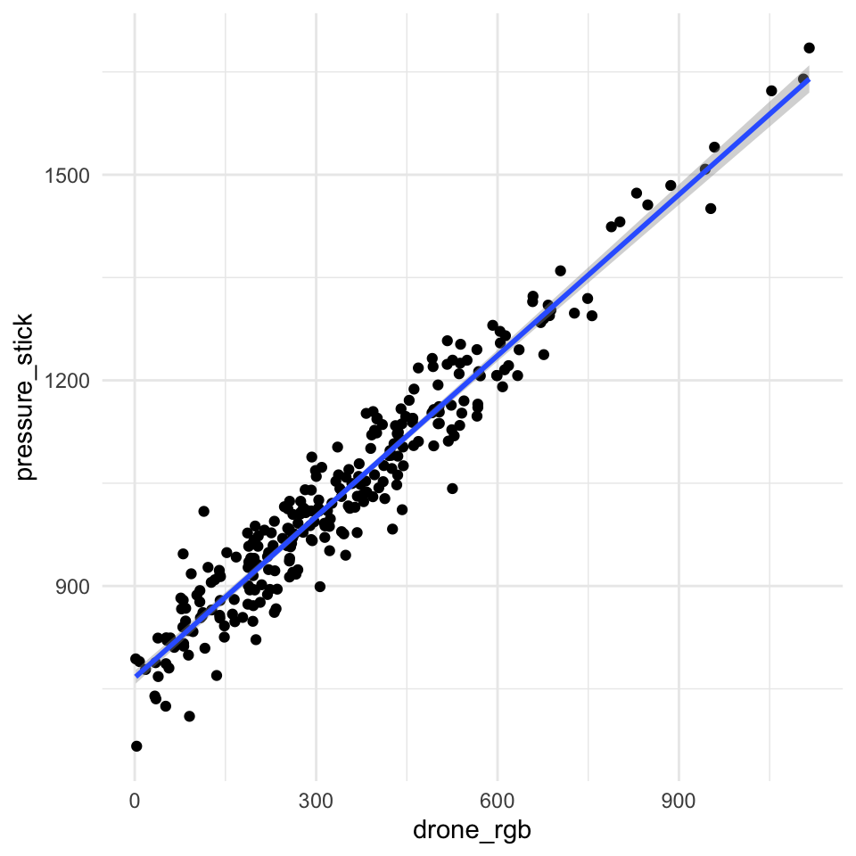
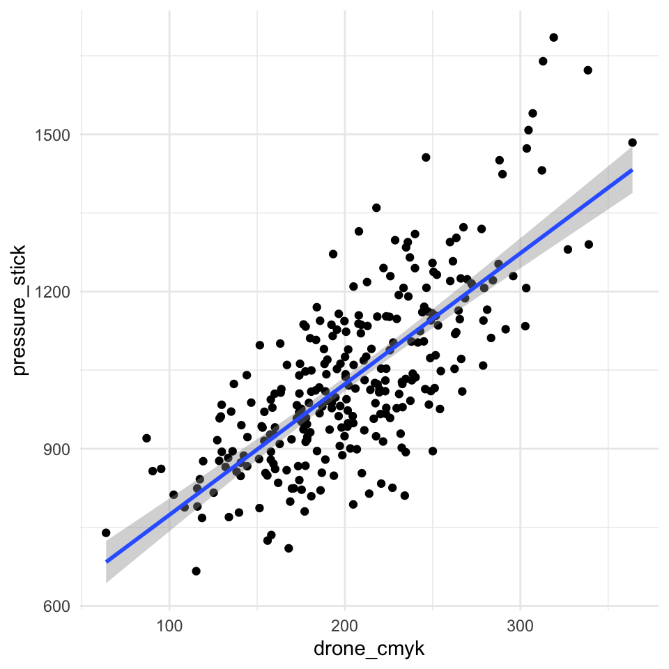
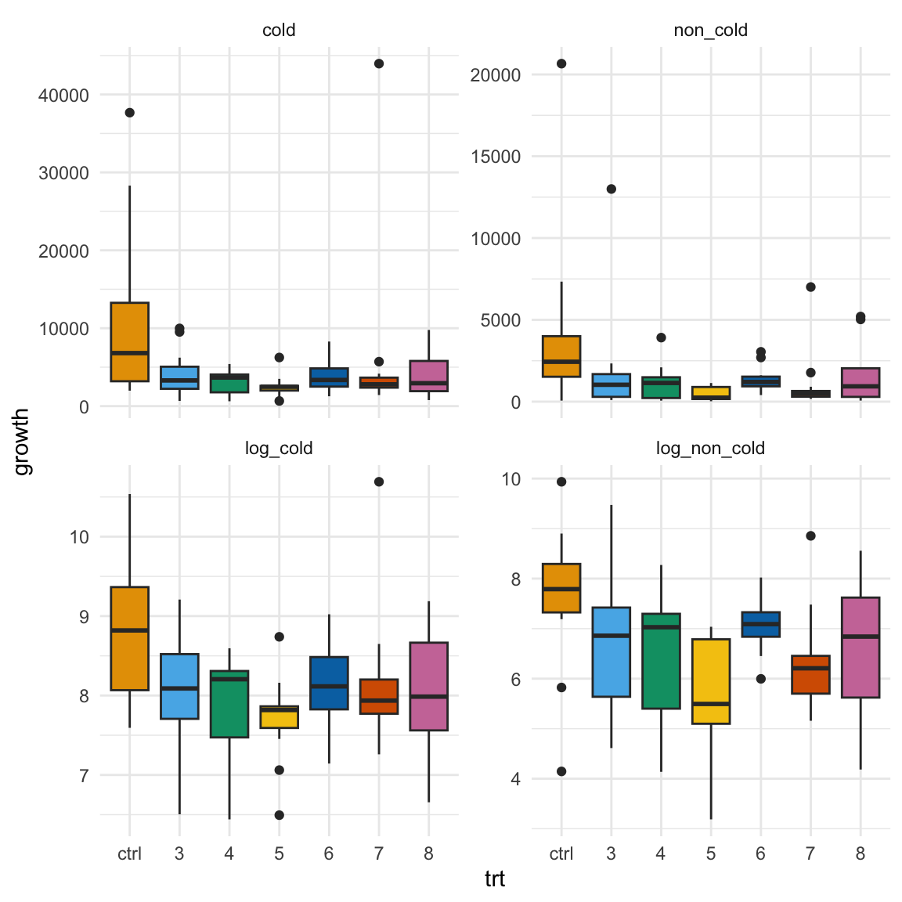

pacman::p_load(tidyverse, magrittr, broom, readxl,
effectsize, multcompView, multcomp,
janitor, see, parameters, yardstick,
rcompanion, emmeans, conflicted)
conflicts_prefer(dplyr::select)
conflicts_prefer(dplyr::filter)
conflicts_prefer(dplyr::mutate)
cbbPalette <- c("#000000", "#E69F00", "#56B4E9", "#009E73",
"#F0E442", "#0072B2", "#D55E00", "#CC79A7")50 Äquivalenz oder Nichtunterlegenheit
Version vom July 28, 2023 um 20:27:43
“Absence of evidence is not evidence of absence” — Altman und Bland (1995)
In diesem Kapitel wollen wir uns mit Gleichheit beschäftigen. Dabei gibt es zwei Arten von Gleichheit. Zum einen können wir uns die technische Gleichheit anschauen oder aber die medizinische- oder Behandlungsgruppengleichheit. Wir definieren die beiden Settings daher wie folgt.
- Technische Gleichheit wollen wir nachweisen, wenn wir zwei technische Messmethoden miteinander vergleichen. Wir messen also einmal ein Wachstum mit dem Verfahren A und einmal mit dem Verfahren B. In beiden Fällen erhalten wir dann eine kontinuierliche Zahl, wie zum Beispiel das Gewicht. Jetzt wollen wir wissen, ob das Verfahren A gleich dem Verfahren B das Wachstum gemessen hat.
- Medizinische- oder Behandlungsgleichheit wollen wir nachweisen, wenn wir verschiedene Behandlungsgruppen haben. Damit wollen wir auch verschiedene Hypothesen testen. Diese Behandlungsgruppen vergleichen wir dann zu einer Kontrolle oder Standard und wollen nachweisen, dass unsere Behandlungsgruppen gleich zu dem Standard sind. Die Anwendung ist auch eher bei Tieren oder Menschen zu finden. Wir wollen hier also explizit keine technische Gleichheit nachweisen.
Je nachdem welche Gleichheit du dir anschauen willst, musst du natürlich auch andere statistische Verfahren wählen. Wir schauen uns daher in diesem Kapitel zuerst einmal die technische Gleichheit an - die ich hier mal so benenne - und danach die medizinische Gleichheit, die sich auf das statistische Hypothesentesten bezieht.
Bei der technischen Gleichheit nutzen wir die lineare Regression und deren Gütekriterien. Bei der medizinischen Gleichheit drehen wir die statistischen Null- und Alternativehypothese und haben damit andere Probleme. Wir rechnen aber einen klassischen Hypothesentest.
50.1 Genutzte R Pakete
Wir wollen folgende R Pakete in diesem Kapitel nutzen.
Am Ende des Kapitels findest du nochmal den gesamten R Code in einem Rutsch zum selber durchführen oder aber kopieren.
50.2 Daten
Als erstes wollen wir uns einmal die Daten für die Überprüfung der technischen Gleichheit anschauen. Die Daten stammen aus Dronenüberflügen zur Bestimmung der Grasdichte auf Weideflächen aus der Datei drone_tech.xlsx. Dabei haben wir zum einen die Grasdichte traditionell mit einem Druckstab gemessen pressure_stick und vergleichen diese Werte dann mit den Werten aus dem Dronenüberflug. Der Drohnenüberflug liefert uns Bilder und aus den Bildern extrahieren wir einen RGB-Wert (abk. Red, Green, Blue) in der Spalte drone_rgb oder einen CMYK-Wert (abk. Cyan, Magenta, Yellow (Gelb), Key (Schwarz)) in der Spalte drone_cmyk. Wir wollen nun schauen, ob wir die drei Werte sinnvoll in ein Verhältnis setzen können. Ein Auszug aus den Daten ist nochmal in der Tabelle 50.1 dargestellt.
| pressure_stick | drone_rgb | drone_cmyk |
|---|---|---|
| 1048.24 | 373.31 | 254.65 |
| 1284.31 | 671.45 | 234.86 |
| 1170.07 | 544.5 | 184.01 |
| … | … | … |
| 1013.34 | 355.84 | 219.67 |
| 1134.29 | 537.43 | 212.86 |
| 917.29 | 266.74 | 178.46 |
In unserem zweiten Datenbeispiel schauen wir uns die Keimungsdaten nach Behandlung mit sechs biologischen Pilzmittel unter zwei Kältebehandlungen aus der Datei cold_seeds.xlsx an. Dabei ist wichtig zu wissen, dass es eine Kontrolle gibt, die das chemische Standardpräparat repräsentiert. Wir wollen jetzt wissen, ob unsere biologischen Alternativen gleich gut sind. Das heißt, wir wollen nicht mehr oder weniger als das Standardpräparat sondern gleichviel. Als Outcome zählen wir die Sporen auf den jungen Keimlingen. Da unsere Pflanze auch eine Kältebehandlung überstehen würde, haben wir auch noch die beiden Kältevarianten mit untersucht. In der Tabelle 50.2 sind die Daten einmal dargestellt.
| trt | cold | non_cold |
|---|---|---|
| 1 | 386.25 | 22.9 |
| 1 | 100.52 | 169.59 |
| 1 | 56.84 | 65.46 |
| 1 | 357.65 | 142.44 |
| 2 | 37668.6 | 20659.77 |
| 2 | 28302.99 | 7333.37 |
| … | … | … |
| 8 | 2334.1 | 352.41 |
| 8 | 9776.15 | 5025.68 |
| 8 | 1932.27 | 918.05 |
| 8 | 777.63 | 149.17 |
| 8 | 2933.99 | 1416.51 |
| 8 | 5731.01 | 2022.39 |
Wir müssen jetzt leider nochmal ran und die Daten etwas aufräumen. Zum einen muss die erste Behandlung raus, hier handelt es sich nur um eine positive Kontrolle, ob überhaupt etwas gewachsen ist. Dann wollen wir uns die Daten auch log-transformieren. Das hat den Grund, dass die statistischen Verfahren in der Äquivalenzanalyse eine Normalverteilung verlangen. Mit der log-Transformation erreichen wir log-normalverteilte Daten, die einer Normalverteilung recht nahe kommen. Am Ende wollen wir dann auch die zweite Behandlung so benennen, dass wir auch immer die Kontrolle erkennen.
Es ergibt sich dann die Tabelle 50.3. Wir werden dann in der folgenden Analyse nur noch die log-transformierten Spalten log_cold und log_non_cold nutzen.
| trt | cold | non_cold | log_cold | log_non_cold |
|---|---|---|---|---|
| ctrl | 37668.6 | 20659.77 | 10.54 | 9.94 |
| ctrl | 28302.99 | 7333.37 | 10.25 | 8.9 |
| ctrl | 2874.76 | 1325.42 | 7.96 | 7.19 |
| ctrl | 7564.44 | 2103.64 | 8.93 | 7.65 |
| … | … | … | … | … |
| 8 | 1932.27 | 918.05 | 7.57 | 6.82 |
| 8 | 777.63 | 149.17 | 6.66 | 5.01 |
| 8 | 2933.99 | 1416.51 | 7.98 | 7.26 |
| 8 | 5731.01 | 2022.39 | 8.65 | 7.61 |
50.3 Technische Gleichheit
Beginnen wir also mit der Beurteilung von der technischen Gleichheit zweier Verfahren. Ich nutze hier das Wort technische Gleichheit, da wir hier nicht zwei Gruppen miteinander vergleichen, sondern eben kontinuierlich gemessene Werte haben und wissen wollen, ob diese gemessenen Werte aus den beiden Verfahren gleich sind. In unserem Beispiel wollen wir wissen, ob wir den Druckstab zum Messen der Grasdichte durch einen Drohnenüberflug erstetzen können. Der Dronenflug produziert Bilder und wir können auf zwei Arten Zahlen aus den Bildern generieren. Wir extrahieren entweder die RGB-Werte der Bilder oder aber die CMYK-Werte. Hier ist natürlich ein Schritt den ich überspringe, wir erhalten am Ende eben einen Wert für ein Bild. Oder andersherum, wir können genau einer Messung mit dem Druckstab ein Bild der Drone zuordnen.
In der Abbildung 50.1 (a) und in der Abbildung 50.1 (b) sehen wir den Zusammenhang zwischen dem Druckstab und der Dronenmessung für beide Farbskalenwerte nochmal visualisiert. In einer idealen Welt würden alle Punkte auf einer Linie liegen. Das heißt, wir haben einen perfekten Zusammenhang zwischen dem Druckstab und den Farbskalenwerten. So ein perfekter Zusammenhang tritt in der Natur nie auf, deshalb müssen wir uns nun mit statistischen Maßzahlen behelfen.
Wir können die Funktion geom_smooth() nutzen um eine lineare Funktion durch die Punkte zu legen. Wir sehen ist der Fehler, dargestellt als grauer Bereich, bei den CMYK-Werten größer. Auch haben wir Punkte die etwas anch oben weg streben. In der RGB-Skala haben wir eher einen linearen Zusammenhang. Im Folgenden wollen wir uns dann einmal die statistischen Maßzahlen zu der Visualisierung anschauen.
ggplot(drone_tbl, aes(drone_rgb, pressure_stick)) +
theme_bw() +
geom_point() +
geom_smooth(method = "lm", se = TRUE)
ggplot(drone_tbl, aes(drone_cmyk, pressure_stick)) +
theme_bw() +
geom_point() +
geom_smooth(method = "lm", se = TRUE)

50.3.1 Bestimmtheitsmaß \(R^2\)
Für die genaueren Werte der linearen Funktion nutzen wir dann die Funktion lm(). Wir brauchen die statistischen Maßzahlen höchstens, wenn uns eine Umrechung von den Werten von der einen Messung zu der anderen Messung interessiert.
fit_drone <- lm(pressure_stick ~ drone_rgb, data = drone_tbl)
fit_drone %>% model_parameters()Parameter | Coefficient | SE | 95% CI | t(279) | p
---------------------------------------------------------------------
(Intercept) | 766.33 | 5.12 | [756.26, 776.41] | 149.70 | < .001
drone rgb | 0.78 | 0.01 | [ 0.76, 0.81] | 61.76 | < .001Zum einen können wir uns jetzt auch die lineare Funktion und damit den Zusammenhang von dem Druckstab zu der RGB-Farbskala erstellen. Mir der folgenden Formel können wir dann die Werte der Dronen RGB-Farbskala in die Werte des Druckstabes umrechnen.
\[ pressure\_stick = 766.33 + 0.78 \cdot drone\_rgb \]
Zum anderen erhalten wir mit der Funktion lm() dann auch die Möglichkeit das Bestimmtheitsmaß \(R^2\) zu berechnen. Du kennst das Bestimmtheitsmaß \(R^2\) schon aus dem Kapitel für die Qualität einer linearen Regression. Hier nochmal kurz zusammengefasst, das Bestimmtheitsmaß \(R^2\) beschreibt, wie gut die Punkte auf der Geraden liegen. Ein Bestimmtheitsmaß \(R^2\) von 1 bedeutet, dass die Punkte perfekt auf der Geraden liegen. Ein Bestimmtheitsmaß \(R^2\) von 0, dass die Punkte eher wild um eine potenzielle Graden liegen.
Im Folgenden können wir uns noch einmal die Formel des Bestimmtheitsmaß \(R^2\) anschauen um etwas besser zu verstehen, wie die Zusammenhänge mathematisch sind. Zum einen brauchen wir den Mittelwert von \(y\) als \(\bar{y}\) sowie die Werte der einzelnen Punkte \(\bar{y}\) und die Werte auf der Geraden mit \(\hat{y}_i\).
\[ \mathit{R}^2 = \cfrac{\sum_{i=1}^N \left(\hat{y}_i- \bar{y}\right)^2}{\sum_{i=1}^N \left(y_i - \bar{y}\right)^2} \]
In der Abbildung 50.2 sehen wir den Zusammenhang nochmal visualisiert. Wenn die Abstände von dem Mittelwert zu den einzelnen Punkten mit \(y_i - \bar{y}\) gleich dem Abstand der Mittelwerte zu den Punkten auf der Geraden mit \(\hat{y}_i- \bar{y}\) ist, dann haben wir einen perfekten Zusammenhang.

Wir können die Funktion glance() nutzen um uns das r.squared und das adj.r.squared wiedergeben zu lassen.
fit_drone %>%
glance() %>%
select(r.squared)# A tibble: 1 × 1
r.squared
<dbl>
1 0.932Wir haben wir ein \(R^2\) von \(0.932\) vorliegen. Damit erklärt unser Modell bzw. die Gerade 93.2% der Varianz. Der Anteil der erklärten Varianz ist auch wunderbar hoch, so dass wir davon ausgehen können, dass der Druckstab und die RGB-Werte der Drone ungefähr das Gleiche wiedergeben.
50.3.2 Korrelation
Neben der Information wie gut die Punkte auf der Geraden liegen, also wie die Punkte um die Gerade streuen, können wir uns auch die Korrelation und damit die Steigung der Gerade wiedergeben lassen. Das Bestimmtheitsmaß \(R^2\) sagt uns nämlich nichts über die Richtung der Geraden aus. Die Korrelation liefert uns die Steigung der Geraden mit dem Vorzeichen.
Wir können hier verschiedene Korrelationsmaße berechnen. Am häufigsten werden wir die Korrelation nach Pearson berechnen, da wir von einem normalverteilten \(y\) ausgehen. Wenn dies nicht der Fall sein sollte empfiehlt sich stattdessen den Korrelationkoeffizienten nach Spearman zu nutzen.
[1] 0.97[1] 0.96Nachdem wir die Korrelation berechnet haben, sehen wir das wir einen positiven Zusammenhang vorliegen haben. Die Gerade durch die Punkte steigt an und ist fast eine 45\(^{\circ}\) Gerade, da wir eine Korrelation nahe 1 vorliegen haben.
50.3.3 MSE, RMSE, nRMSE und MAE
Neben der Betrachtung der Abweichung vom Mittelwert von \(y\) können wir uns auch die Abstände von den geschätzten Punkten auf der Geraden \(\hat{y}_i\) zu den eigentlichen Punkten anschauen \(y_i\). Wir haben jetzt zwei Möglichkeiten die Abstände zu definieren.
- Wir schauen uns die quadratischen Abstände mit \((y_i - \hat{y}_i)^2\) an. Wir berechnen dann die mittlere quadratische Abweichung (eng. mean square error abk. MSE).
- Wir schauen uns die absoluten Abstände mit \(|y_i - \hat{y}_i|\) an. Wir berechnen dann den mittleren absoluten Fehler (eng. mean absolute error, abk. MAE).
Im Folgenden betrachten wir erst den MSE und seine Verwandten. Wie wir an der Formel sehen, berechnen wir für den MSE einfach nur die quadratische Abweichung zwischen den Beobachtungen \(y_i\) und den Werten auf der berechneten Geraden \(\hat{y}_i\). Dann summieren wir alles auf und teilen noch durch die Anzahl der Beobachtungen also Punkte \(n\).
\[ MSE = \cfrac{1}{n}\sum^n_{i=1}(y_i - \hat{y}_i)^2 \]
Häufig wollen wir dann nicht die quadratischen Abweichungen angeben. Wir hätten dann ja auch die Einheit der Abweichung im Quadrat. Daher ziehen wir die Wurzel aus dem MSE und erhalten den root mean square error (abk. RMSE). Hierfür gibt es dann keine gute Übersetzung ins Deutsche.
\[ RMSE = \sqrt{MSE} = \sqrt{\cfrac{1}{n}\sum^n_{i=1}(y_i - \hat{y}_i)^2} \]
Der RMSE ist ein gewichtetes Maß für die Modellgenauigkeit, das auf der gleichen Skala wie das Vorhersageziel angegeben wird. Einfach ausgedrückt kann der RMSE als der durchschnittliche Fehler interpretiert werden, den die Vorhersagen des Modells im Vergleich zum tatsächlichen Wert aufweisen, wobei größere Vorhersagefehler zusätzlich gewichtet werden.
Je näher der RMSE-Wert bei 0 liegt, desto genauer ist das Modell. Der RMSE-Wert wird jedoch auf derselben Skala zurückgegeben wie das Ziel, für das Sie Vorhersagen treffen, und daher gibt es keine allgemeine Regel für die Interpretation von Wertebereichen. Die Interpretation Ihres Wertes kann nur innerhalb Ihres Datensatzes bewertet werden.
drone_tbl %>%
rmse(pressure_stick, drone_rgb)# A tibble: 1 × 3
.metric .estimator .estimate
<chr> <chr> <dbl>
1 rmse standard 694.Als letzte Möglichkeit sei noch der normalisierte root mean square error (abk. nRMSE) genannt. In diesem Fall wird der RMSE nochmal durch den Mittelwert von \(y\) geteilt.
\[ nRMSE = \cfrac{RMSE}{\bar{y}} = \cfrac{\sqrt{MSE}}{\bar{y}} = \cfrac{\sqrt{\cfrac{1}{N}\sum^N_{i=1}(y_i - \hat{y}_i)^2}}{\bar{y}} \]
In wie weit jetzt jedes MSE Abweichungsmaß sinnvoll ist und auch in der Anwendung passen mag, sei einmal dahingestellt. Wichtig ist hier zu Wissen, dass wir die MSE-Fehler nutzen um verschiedene Verfahren zu vergleichen. Ein kleiner Fehler ist immer besser. Ein einzelner MSE-Wert an sich, ist dann immer schwer zu interpretieren.
Als Alternative zu den MSE-Fehlern bietet sich dann der MAE an. Hier schauen wir dann auf die absoluten Abstände. Wir nehmen also das Vorzeichen raus, damit sich die Abstände nicht zu 0 aufaddieren. Wir haben dann folgende Formel vorliegen.
\[ MAE = \cfrac{1}{n}\sum^n_{i=1}|y_i - \hat{y}_i| \]
Der MAE hat gegenüber dem RMSE Vorteile in der Interpretierbarkeit. Der MAE ist der Durchschnitt der absoluten Werte der Fehler. MAE ist grundsätzlich leichter zu verstehen als die Quadratwurzel aus dem Durchschnitt der quadrierten Fehler. Außerdem beeinflusst jede einzelne Abweichung den MAE in direktem Verhältnis zum absoluten Wert der Abweichung, was bei der RMSE nicht der Fall ist. Der MAE ist nicht identisch mit dem mittleren quadratischen Fehler (RMSE), auch wenn einige Forscher ihn so angeben und interpretieren. MAE ist konzeptionell einfacher und auch leichter zu interpretieren als RMSE: Es ist einfach der durchschnittliche absolute vertikale oder horizontale Abstand zwischen jedem Punkt in einem Streudiagramm und der Geraden.
drone_tbl %>%
mae(pressure_stick, drone_rgb)# A tibble: 1 × 3
.metric .estimator .estimate
<chr> <chr> <dbl>
1 mae standard 691.Wir können uns mit der Funktion metrics() auch die Fehler zusammenausgeben lassen.
drone_tbl %>%
metrics(pressure_stick, drone_rgb)# A tibble: 3 × 3
.metric .estimator .estimate
<chr> <chr> <dbl>
1 rmse standard 694.
2 rsq standard 0.932
3 mae standard 691. Wie schon oben geschrieben, der MSE und Co. sind nur in einem Vergleich sinnvoll. Deshalb hier nochmal der Vergleich der beiden Farbskalen der Dronenbilder.
drone_tbl %>%
metrics(pressure_stick, drone_rgb)# A tibble: 3 × 3
.metric .estimator .estimate
<chr> <chr> <dbl>
1 rmse standard 694.
2 rsq standard 0.932
3 mae standard 691. drone_tbl %>%
metrics(pressure_stick, drone_cmyk)# A tibble: 3 × 3
.metric .estimator .estimate
<chr> <chr> <dbl>
1 rmse standard 843.
2 rsq standard 0.546
3 mae standard 831. Wir schon zu erwarten ist auch hier der Fehler bei den RGB-Werten kleiner als bei den CMYK-Werten. Daher würden wir uns hier für die Umrechnung der RGB-Werte entscheiden.
50.4 Medizinische- oder Behandlungsgleichheit
Disclaimer - Wichtig! Lesen!
Der folgende Text ist ein Lehrtext für Studierende. Es handelt sich keinesfalls um eine textliche Beratung für Ethikanträge oder Tierversuchsanträge geschweige den der Auswertung einer klinischen Studie. Alle Beispiel sind im Zweifel an den Haaren herbeigezogen und dienen nur der Veranschaulichung möglicher Sachverhalte.
Antragsteller:innen ist die statistische Beratung von einer entsprechenden Institution dringlichst angeraten.
Wir eingangs schon geschrieben wollen wir bei der Medizinische- oder Behandlungsgleichheit nachweisen, dass sich verschiedene Behandlungsgruppen zu einer Kontrolle oder Standard gleich oder äquivalent sind. Wir haben es hier als mit einem klassischen Gruppenvergleich zu tun, bei dem wir die Hypothesen drehen. Wenn wir auf Unterschied testen, dann haben wir in der Nullhypothese \(H_0\) die Gleichheit zwischen zwei Mittelwerten stehen. Wir wollen die Gleichheit der Mittelwerte ablehnen. Wir schreiben also unsere beiden Hypothesenpaare wie folgt.
Wie immer gibt es auch tolle Tutorien wie das Tutorium von Daniël Lakens Equivalence Testing and Interval Hypotheses
- Statistischer Test auf Unterschied
-
\[ \begin{aligned} H_0: \bar{y}_{1} &= \bar{y}_{2} \\ H_A: \bar{y}_{1} &\neq \bar{y}_{2} \\ \end{aligned} \]
Wenn wir jetzt einen statiistischen Teste für die Äquivalenz oder Nichtunterlegenheit rechnen wollen, dann drehen wir das Hypothesenpaar. Wir wollen jetzt in der Nullhypothese die “Ungleichheit” der Mittelwerte ablehnen.
- Statistischer Test auf Gleichheit
-
\[ \begin{aligned} H_0: \bar{y}_{1} &\neq \bar{y}_{2} \\ H_A: \bar{y}_{1} &= \bar{y}_{2} \\ \end{aligned} \]
Und hier beginnt auch schon die Krux. Konnten wir uns relativ einfach einigen, dass ein Mittelwertesunterschied \(\Delta\) von 0 eine Gleichheit zwischen den beiden Mittelwerten der beiden Gruppen bedeutet, so ist die Festlegung auf einen Unterschied schon schwieriger. Die Bewertung, ob zwei Mittelwerte sich für zwei Gruppen unterscheiden, kann nur im Kontext der biologischen oder medizinischen Fragestellung beantwortet werden. Die Diskussion, ob ein \(\Delta\) von 0.1 noch gleich oder ungleich ist, kann rein numerisch schwer geführt werden. Deshalb gibt es einige Richtlinien und Richtwerte.
Aus dem Grund definieren wir Äquivalenzgrenzen oder Äquivalenzzone. Die Äquivalenzzone wird durch eine untere Äquivalenzgrenze und/oder eine obere Äquivalenzgrenze definiert. Die untere Äquivalenzgrenze (UEG) definiert deine untere Grenze der Akzeptanz für die Mittelwertsdifferenz. Die obere Äquivalenzgrenze (UEL) definiert die obere Grenze der Akzeptanz für die Mittelwertsdifferenz. Jede Abweichung von der Mittelwertsdifferenz, die innerhalb dieses Bereichs der Äquivalenzgrenzen liegt, wird als unbedeutend angesehen. Du kannst hier statt Mittelwertsdifferenz natürlich auch in Anteilen denken, wenn es um das Odds ratio oder Risk ratio geht.
Als erstes Beispiel einer Behörde hier einmal das Zitat der Europäische Behörde für Lebensmittelsicherheit (EFSA) für die Zulassung eines Pilzmittels aus unseren Beispiel. Hier sei angemerkt, dass viele statistische Methoden von einem normalverteilten Outcome oder aber approximativ log-normalverteilten Outcome ausgehen. Deshalb werden die Äquivalenzgrenzen hier auch auf der \(log\)-Skala benannt.
“The limits for equivalence were set to \(-\cfrac{1}{2}\log\) and \(\cfrac{1}{2}\log\) equal to -0.5 and 0.5 because of the log transformation of the outcome.” — Europäische Behörde für Lebensmittelsicherheit (EFSA)
Häufig werden die Effekte aus verschiedenen Studien auch skaliert, damit wir dann die Effekte besser vergleichen können. Als Skalierung bietet sich eine Normalisierung oder Standardisierung an. Als Beispiel in den Pflanzenwissenschaften sei Voet u. a. (2019) genannt. Voet u. a. (2019) führen Analysen zum Schutz vor unbeabsichtigten Auswirkungen von gentechnisch verändertem Mais auf die Umwelt oder die menschliche Gesundheit durch [Link]. Hier hilft besonders sich von anderen Studien vor dem Experiment zu inspirieren zu lassen. Um eine ausgiebige Literaturrecherche kommt man dann meist nicht rum.
Auch sei noch das Institut für Qualität und Wirtschaftlichkeit im Gesundheitswesen (IQWiG) erwähnt, welches für die Regulierung von Anwendungen in der Humanmedizin zu tun hat. Da sind ja die Grenzen immer etwas fließend. Wann ist ein Medikament nur für die Agrarwissenschaften relevant und hate keine Auswirkungen auf den Menschen? Diese Frage lasse ich hier offen. Hier hilft aber auch der Blick in das Papier Allgemeine Methoden und dann das Kapitel 9. Hier einmal ein Zitat aus dem Abschnitt zu dem Nachweis zur Gleichheit. Wir sehen. so einfach ist die Sachlage nicht.
“Umgekehrt erfordert auch die Interpretation nicht statistisch signifikanter Ergebnisse Aufmerksamkeit. Insbesondere wird ein solches Ergebnis nicht als Nachweis für das Nichtvorhandensein eines Effekts (Abwesenheit bzw. Äquivalenz) gewertet.” — Kapitel 9.3.5 Nachweis der Gleichheit in Allgemeine Methoden des Institut für Qualität und Wirtschaftlichkeit im Gesundheitswesen (IQWiG)
Schauen wir uns nun nochmal unsere Keimungsdaten nach Behandlung mit sechs biologischen Pilzmittel unter zwei Kältebehandlungen an. Wenn wir den Richtlinien der EFSA folgen, dann rechnen wir auf den \(\log\)-transformierten Daten. Die \(\log\)-transformierten Daten sind damit auch approximativ normalverteilt, so dass wir hier dann alle statistischen Methoden nutzen können, die eine Normalverteilung voraussetzen. In der Abbildung 50.3 sehen wir, dass die \(\log\)-transformierten Daten eindeutig mehr einer Normalverteilung folgen.
cold_seed_tbl %>%
pivot_longer(cold:last_col(),
names_to = "type",
values_to = "growth") %>%
mutate(type = as_factor(type)) %>%
ggplot(aes(trt, growth, fill = trt)) +
theme_bw() +
geom_boxplot() +
facet_wrap(~ type, scales = "free_y") +
scale_fill_okabeito() +
theme(legend.position = "none")
Im Folgenden gehen wir jetzt von einfach nach kompliziert. Daher schauen wir uns erstmal die einfachste statistische Methode an, die wir nutzen können und werden dann inhaltlich komplizierter.
50.4.1 ANOVA mit Effektschätzer
Als erstes missbrauchen wir die ANOVA für den Nachweis der Gleichheit. Das ist die Schlechteste der denkbaren Möglichkeiten aber im Rahmen einer Bachelorarbeit oder aber um sich einen ersten Überblick zu verschaffen sinnvoll. Warum ist die die ANOVA so schlecht? Wir testen hier weiterhin die Nullhypothese auf Gleichheit. Wenn wir also einen signifikante ANOVA vorfinden, dann würden wir die Nullhypothese der Gleichheit ablehnen und auf einen Mittelwertsunterschied schließen. Wie wir schon vorab gelernt haben, ist eine nicht signifikante ANOVA kein schlüssiger Beweis für die Gültigkeit der Nullhypothese der Gleichheit. Wir arbeiten mit dem Falsifikationsprinzip, wir können nur Hypothesen ablehnen. Eine abgelehnte Hypothese bedeutet aber nicht im Umkehrschluss, dass die Gegenhypothese wahr ist. Daher nutzen wir hier die ANOVA als einen Art Seismographen. Eine signifikante ANOVA deutet auf einen Unterschied in den Mittelwerten hin, dann ist es vermutlich unwahrscheinlich, dass wir Gleichheit vorliegen haben.
Schauen wir uns dazu einmal die zwei einfaktoriellen ANOVA’s für die kälte und nicht-kälte Behandlung einmal an. Als erstes rechnen wir eine einfacktorielle ANOVA und schauen, ob wir ein signifkantes Eregbnis vorliegen haben.
lm_non_cold_fit <- lm(log_non_cold ~ trt, data = cold_seed_tbl)
lm_non_cold_fit %>% anova %>% model_parameters()Parameter | Sum_Squares | df | Mean_Square | F | p
---------------------------------------------------------
trt | 26.39 | 6 | 4.40 | 2.75 | 0.018
Residuals | 118.50 | 74 | 1.60 | |
Anova Table (Type 1 tests)Da der \(p\)- Wert kleiner ist als das Signifikanzniveau \(\alpha\) müssen wir die Nullhypothese der Gleichheit ablehnen. Mindestens einen paarweisen Unterschied zwischen den Gruppen gibt es. Prinzipiell könnten wir natürlich hoffen, dass alle Gruppen gleich zur Kontrolle sind und sich nur zwei Behandlungsgruppen unterscheiden, aber es ist schonmal ein schlechtes Zeichen, wenn wir eine signifikante ANOVA vorliegen haben und auf Gleichheit der Behandlungen zur Kontrolle aus sind.
Schauen wir nochmal auf den Effekt. Wenn wir einen großen Effekt der Behandlungsgruppen vorliegen haben, dann deutet dies auch nicht gerade auf gleiche Gruppenunterschiede.
lm_non_cold_fit %>% eta_squared() # Effect Size for ANOVA
Parameter | Eta2 | 95% CI
-------------------------------
trt | 0.18 | [0.02, 1.00]
- One-sided CIs: upper bound fixed at [1.00].Wir sehen, dass wir nur 18% der Varianz durch unsere Behandlungsgruppen erklären. Daher würden wir hier nicht von einem großen Effekt ausgehen. Würde auch hier viel Varianz erklärt, dann könnten wir hier auch aufhören. Schauen wir uns nochmal die andere Art der Vorbehandlung an.
Jetzt schauen wir nochmal wo die paarweisen Unterschiede sind. Wir nutzen dazu den pairwise.t.test(). Darüber hinaus haben wir bei den nicht-kälte behandelten Samen eine stark unterschiedliche Streuung der einzelnen Beobachtungen in den Gruppen. Durch die unterschiedlichen Varianzen in den Gruppen setzten wir pool.sd = FALSE und nehmen hier Varianzheterogenität an. Dann schauen wir uns einmal das compact letter display an und sehen, welche Behandlungen sich voneinander unterscheiden oder nicht.
cold_seed_tbl %$%
pairwise.t.test(log_non_cold, trt, pool.sd = FALSE,
p.adjust.method = "none") %>%
extract2("p.value") %>%
fullPTable() %>%
multcompLetters()ctrl 3 4 5 6 7 8
"a" "ab" "ab" "b" "a" "b" "ab" Wir sehen, dass wir Unterschiede haben. Da wir hier nur zur Kontrolle vergleichen wollen, schauen wir nach dem Buchstaben der Kontrolle und sehen, dass wir hier den letter ahaben. Wir interpretieren das compact letter display nun etwas statistisch schief in dem Sinne, das gleiche Buchstaben Gleichheit aussagen. Immerhin unterscheiden sich die Behandlungen 3, 4, 6 und 8 nicht von der Kontrolle.
Den gleichen Ablauf können wir jetzt auch einmal für die kälte-behandleten Samen machen. Wir rechnen wieder als erstes eine einfaktorielle ANOVA und schauen, ob wir einen signifikanten Unterschied zwischen den Gruppen haben.
lm_cold_fit <- lm(log_cold ~ trt, data = cold_seed_tbl)
lm_cold_fit %>% anova %>% model_parameters()Parameter | Sum_Squares | df | Mean_Square | F | p
---------------------------------------------------------
trt | 9.80 | 6 | 1.63 | 2.71 | 0.020
Residuals | 44.59 | 74 | 0.60 | |
Anova Table (Type 1 tests)Auch hier zeigt die signifikante ANOVA, dass wir mindestens einen paarweisen Mittelwertsunterschied zwischen den Behandlungsgruppen haben. Welche Gruppen sich nun unterscheiden werden wir dann gleich einmal in dem paarweisen t-Test uns anschauen. Vorher nochmal schauen wir nochmal wie stark der Effekt der Behandlungsgruppen ist.
lm_cold_fit %>% eta_squared()# Effect Size for ANOVA
Parameter | Eta2 | 95% CI
-------------------------------
trt | 0.18 | [0.02, 1.00]
- One-sided CIs: upper bound fixed at [1.00].Auch hier können wir 18% der Varianz in dem Wachstum durch die Behandlungsgruppen erklären. Das ist recht wenig. Schauen wir aber jetzt einmal den paarweisen t-Test an. Die Varianzen sind ungefähr gleich in den Gruppen, die Boxplots haben ungefähr die gleiche Ausdehnung nach der Logarithmierung. Deshalb nutzen wir hier einmal dei Funktionalität von emmeans.
lm_cold_fit %>%
emmeans(~ trt) %>%
cld(Letters = letters, adjust = "none") %>%
arrange() trt emmean SE df lower.CL upper.CL .group
5 7.71 0.234 74 7.24 8.17 a
4 7.87 0.224 74 7.42 8.32 a
8 7.97 0.224 74 7.53 8.42 a
3 8.09 0.224 74 7.64 8.54 a
7 8.13 0.224 74 7.68 8.57 a
6 8.14 0.245 74 7.65 8.62 a
ctrl 8.88 0.224 74 8.43 9.32 b
Confidence level used: 0.95
significance level used: alpha = 0.05
NOTE: If two or more means share the same grouping symbol,
then we cannot show them to be different.
But we also did not show them to be the same. Hier unterscheiden sich nun alle Behandlungsgruppen von der Kontrolle. Die neuen Behandlungen unterscheiden sich aber untereinander nicht. Jetzt können wir uns noch anschauen, wie groß den der Mittelwertsunterschied für die einzelnen Behandlungen jeweils ist. Das kann uns die Funktion pwpm() wiedergeben.
lm_cold_fit %>%
emmeans(~ trt) %>%
pwpm(adjust = "none") ctrl 3 4 5 6 7 8
ctrl [8.88] 0.0151 0.0021 0.0005 0.0286 0.0206 0.0057
3 0.78844 [8.09] 0.4900 0.2401 0.8895 0.9033 0.7181
4 1.00830 0.21986 [7.87] 0.6146 0.4258 0.4173 0.7413
5 1.17217 0.38373 0.16387 [7.71] 0.2088 0.1965 0.4093
6 0.74212 -0.04632 -0.26618 -0.43005 [8.14] 0.9816 0.6292
7 0.74980 -0.03865 -0.25851 -0.42238 0.00767 [8.13] 0.6296
8 0.90329 0.11485 -0.10501 -0.26888 0.16117 0.15350 [7.97]
Row and column labels: trt
Upper triangle: P values
Diagonal: [Estimates] (emmean)
Lower triangle: Comparisons (estimate) earlier vs. laterWir lesen Lower triangle: Comparisons (estimate) earlier vs. later und damit wird jeweils der ctrl- Mittelwert minus den Behandlungsmittelwerten in der ersten Spalte angegeben. Wir sehen, dass die Kontrolle immer ein größeres Wachstum hat. Damit haben wir zwar keine Gleichheit gezeigt, aber unsere Behandlungen haben alle weniger als die Kontrolle. Eventuell reicht das ja aus, wir haben zwar nicht gleich viel Wachstum wie die Kontrolle, aber durchgehend weniger.
Das war jetzt hier natürlich die Version für Arme bzw. wenn wir im Rahmen einer Abschlussarbeit noch zusätzlich was berechnen wollen. Wenn es etwas aufwendiger sein soll, dann gibt es natürlich auch richtige statistischen Methoden für den Äquivalenztest.
50.4.2 Äquivalenztest
Wenn wir wirklich in unserem Experiment oder Studie einen Äquivalenztest gleich von Anfang an rechnen wollen, dann können wir auch in R auf ein weitreichendes Angebot an Paketen und Funktionen zurückgreifen. Wie immer ist die Frage, was wollen wir? Wichtig ist, dass wir immer eine Gruppe brauchen zu der wir die Äquivalenz oder Gleichheit bestimmen wollen. Im Weiteren haben wir die Wahl zwischen zwei Ansätzen. Einmal den frequentistischen Ansatz sowie die bayesianische Variante. Ich möchte hier nicht mehr so ins Detail gehen, wir nutzen den frequentistischen Ansatz. Das hat auch den Vorteil, dass wir die Äquivalenz an 95% Konfidenzintervallen überprüfen. Mehr gibt es dann jeweils auf den beiden Hilfeseiten der Funktionen.
- Einmal den frequentistischen Ansatz aus dem Paket
parametersdurch die Funktion parameters::equivalence_test() - Oder die bayesianische Variante aus dem R Paket
bayestestRdurch die Funktion bayestestR::equivalence_test()
Wichtig ist, dass wir immer zum ersten Level des Faktors der Behandlung vergleichen! Das heißt, deine Kontrollgruppe sollte immer die erste Gruppe sein und das erste Level haben. Du kannst sonst mit der Funktion fct_relevel() und mutate() die Level neu anordnen. Wir haben hier aber das Glück, dass wir die Kontrolle als erstes Level der Behandlung trt vorliegen haben.
Wie gehen wir nun vor? Die Funktion equivalence_test() berechnet 95% Konfidenzintervalle für die paarweisen Vergleiche von jeder Behandlung zur Kontrolle. Wir erhalten also sechs 95% Konfidenzintervalle. Im Weiteren müssen wir entscheiden wie groß der Bereich der Äquivalenzzone sein soll. Wir müssen also über die Option range = Grenzen definieren und lassen die Funktion equivalence_test() die Grenzen selbstständig berechnen. Ich empfehle immer die Grenzen aus der Litertaur zu nehmen. In unserem Fall sind es die \(\log\)-Grenzen aus der EFSA Regulierung mit -0.5 und 0.5, die setzen wir dann in die Option range = ein. Die range repräsentiert hierbei die Region of Practical Equivalence (ROPE) oder eben unsere Äquivalenzgrenzen.
res_non_cold <- parameters::equivalence_test(lm_non_cold_fit,
ci = 0.95,
range = c(-0.5, 0.5))
res_non_cold# TOST-test for Practical Equivalence
ROPE: [-0.50 0.50]
Parameter | 90% CI | % in ROPE | H0 | p
-------------------------------------------------------------
(Intercept) | [ 6.99, 8.21] | 0% | Rejected | > .999
trt [3] | [-1.81, -0.08] | 24.15% | Rejected | 0.807
trt [4] | [-1.94, -0.22] | 16.43% | Rejected | 0.868
trt [5] | [-2.87, -1.11] | 0% | Rejected | 0.997
trt [6] | [-1.41, 0.39] | 49.41% | Undecided | 0.541
trt [7] | [-2.16, -0.43] | 3.80% | Rejected | 0.936
trt [8] | [-1.90, -0.18] | 18.81% | Rejected | 0.851 Wir sehen also einmal das Ergebnis unseres Äquivalenztest. Wichtig hierbei ist, dass wir zu der Kontrolle testen. Unsere Kontrolle steckt in dem (Intercept) und die Effekte aus der linearen Regression in lm_non_cold_fit beziehen sich ja alle auf den Intercept, so wird das Modell mit kategorialen Variablen gebaut. In der Spalte % in ROPE sehen wir in wie weit der Unterschied zwischen den Behandlungen, dargestellt als 95% Konfidenzintervall, in den Äquivalenzgrenzen liegt. In der folgenden Spalte H0 dann die Entscheidung für oder gegen die die Nullhypothese im Sinne der Gleichheit. Gut, das ist etwas wirr, schauen wir uns einmal die Abbildung 50.4 an, dann wird es klarer.
plot(res_non_cold) +
theme_minimal()
Als Ergebnis können wir mitnehmen, dass keine der Behandlungen gleich zur Kontrolle ist. Die Behandlung 6 ist noch am nächsten dran, gleich zu sein, aber wir können hier anhand den Daten keine Entscheidung treffen. Am Ende unterscheiden sich alle Behandlungen von der Kontrolle.
Als anderes Beispiel schauen wir uns dann einmal noch die kälte Behandlung an. Hier sehen wir dann schon ein anderes Bild. Die Interpretation ist die gleiche wie eben schon. Wir wollen, dass die 95% Konfidenzintervalle in den Äquivalenzgrenzn von ROPE: [-0.50 0.50] liegen.
res_cold <- parameters::equivalence_test(lm_cold_fit,
ci = 0.95,
range = c(-0.5, 0.5))
res_cold# TOST-test for Practical Equivalence
ROPE: [-0.50 0.50]
Parameter | 90% CI | % in ROPE | H0 | p
------------------------------------------------------------
(Intercept) | [ 8.50, 9.25] | 0% | Rejected | > .999
trt [3] | [-1.32, -0.26] | 22.68% | Rejected | 0.817
trt [4] | [-1.54, -0.48] | 1.85% | Rejected | 0.944
trt [5] | [-1.71, -0.63] | 0% | Rejected | 0.979
trt [6] | [-1.30, -0.19] | 28.13% | Rejected | 0.766
trt [7] | [-1.28, -0.22] | 26.34% | Rejected | 0.784
trt [8] | [-1.43, -0.38] | 11.80% | Rejected | 0.896 In der Abbildung 50.5 sehen wir den Zusammenhang nochmal visualisiert. Hier fällt nochmal deutlicher auf, dass alle Behandlungen geringere Wachstumszahlen aufweisen. Wir könnten also Gleichheit auch so definieren, dass weniger oder gleich auch als äquivalent gilt. Das hängt natürlich vom biologischen Kontext ab, aber wir machen das jetzt einfach mal.
plot(res_cold) +
theme_minimal()
Wenn du keine untere oder obere Grenze möchtest, also eigentlich nur eine Grenze, dann kannst du die andere Grenze auf Unendlich Inf setzen. Wir setzen hier mal die untere Grenze der Äquivalenz auf -Inf und testen somit faktisch nur einseitig.
res_low_cold <- parameters::equivalence_test(lm_cold_fit,
ci = 0.95,
range = c(-Inf, 0.5))
res_low_cold # TOST-test for Practical Equivalence
ROPE: [-Inf 0.50]
Parameter | 90% CI | % in ROPE | H0 | p
------------------------------------------------------------
(Intercept) | [ 8.50, 9.25] | 0% | Accepted | < .001
trt [3] | [-1.32, -0.26] | 100% | Accepted | 0.817
trt [4] | [-1.54, -0.48] | 100% | Accepted | 0.944
trt [5] | [-1.71, -0.63] | 100% | Accepted | 0.979
trt [6] | [-1.30, -0.19] | 100% | Accepted | 0.766
trt [7] | [-1.28, -0.22] | 100% | Accepted | 0.783
trt [8] | [-1.43, -0.38] | 100% | Accepted | 0.896 Wir sehen jetzt, dass sich alle 95% Konfidenzintervalle im ROPE-Bereich befinden. Damit sind dann auch alle Behandlungen gleich zur Kontrolle. Das gilt natürlich nur, da wir weniger als gleich definiert haben! Schauen wir nochmal in der Abbildung 50.6 uns die Visualisierung an.
plot(res_low_cold) +
theme_minimal()
50.5 Weiterführende Links
Am Ende nochmal ein paar Links, die noch von Interesse sein könnten und die ich hier noch nicht verarbeitet habe. Vielleicht mache ich das dann noch oder ich finde noch andere spannende Referenzen. Ich sammle hier dann mal.
- TOSTER und die dazugehörigen Referenzen auf der Seite geben nochmal einen super Überblick.
- Der alte Blogpost zu TOST equivalence testing R package (TOSTER) and spreadsheet.
- Mehr Informationen zu Region of Practical Equivalence (ROPE) aus dem R Paket
bayestestR.
Referenzen
Altman, Douglas G, und J Martin Bland. 1995. „Statistics notes: Absence of evidence is not evidence of absence“. Bmj 311 (7003): 485.
Voet, Hilko van der, Paul W Goedhart, Esteban Garcı́a-Ruiz, Concepción Escorial, und Jana Tulinská. 2019. „Equivalence limit scaled differences for untargeted safety assessments: Comparative analyses to guard against unintended effects on the environment or human health of genetically modified maize“. Food and Chemical Toxicology 125: 540–48.